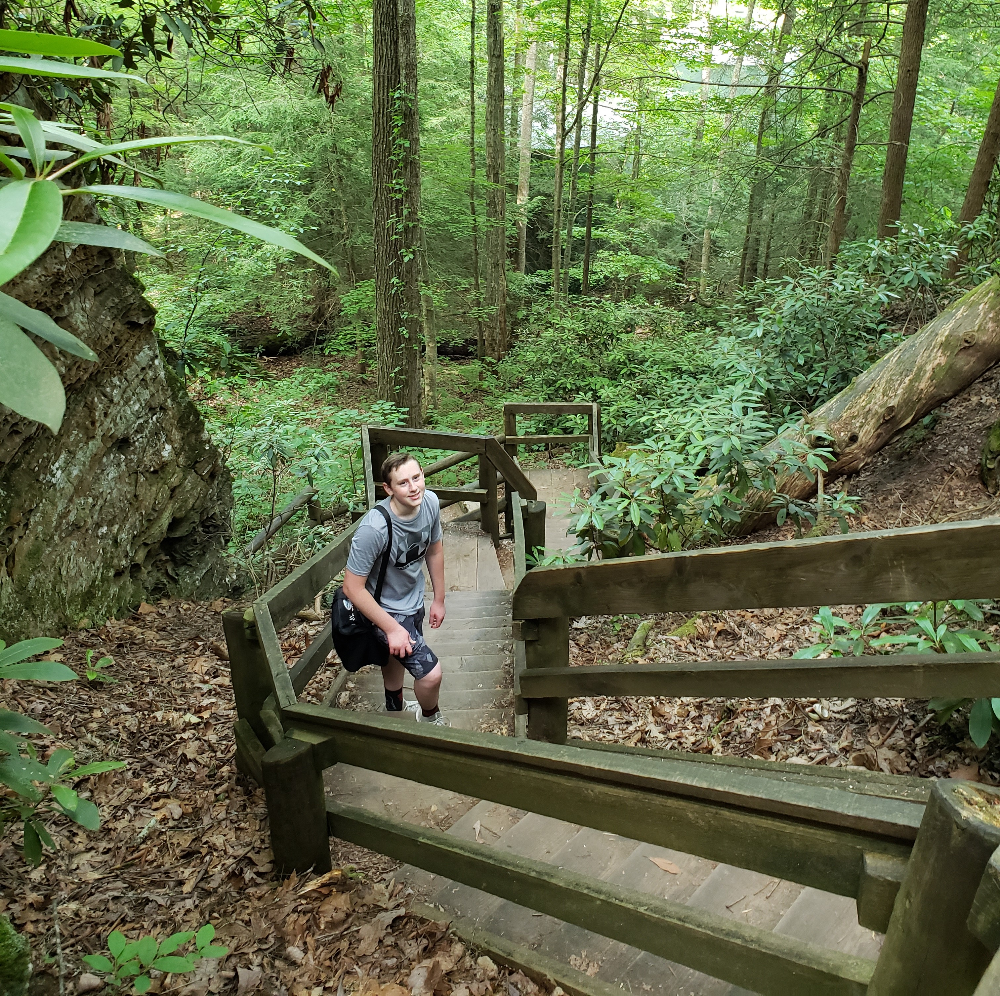
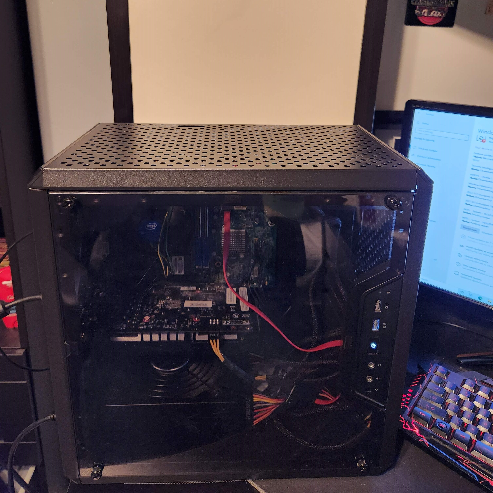
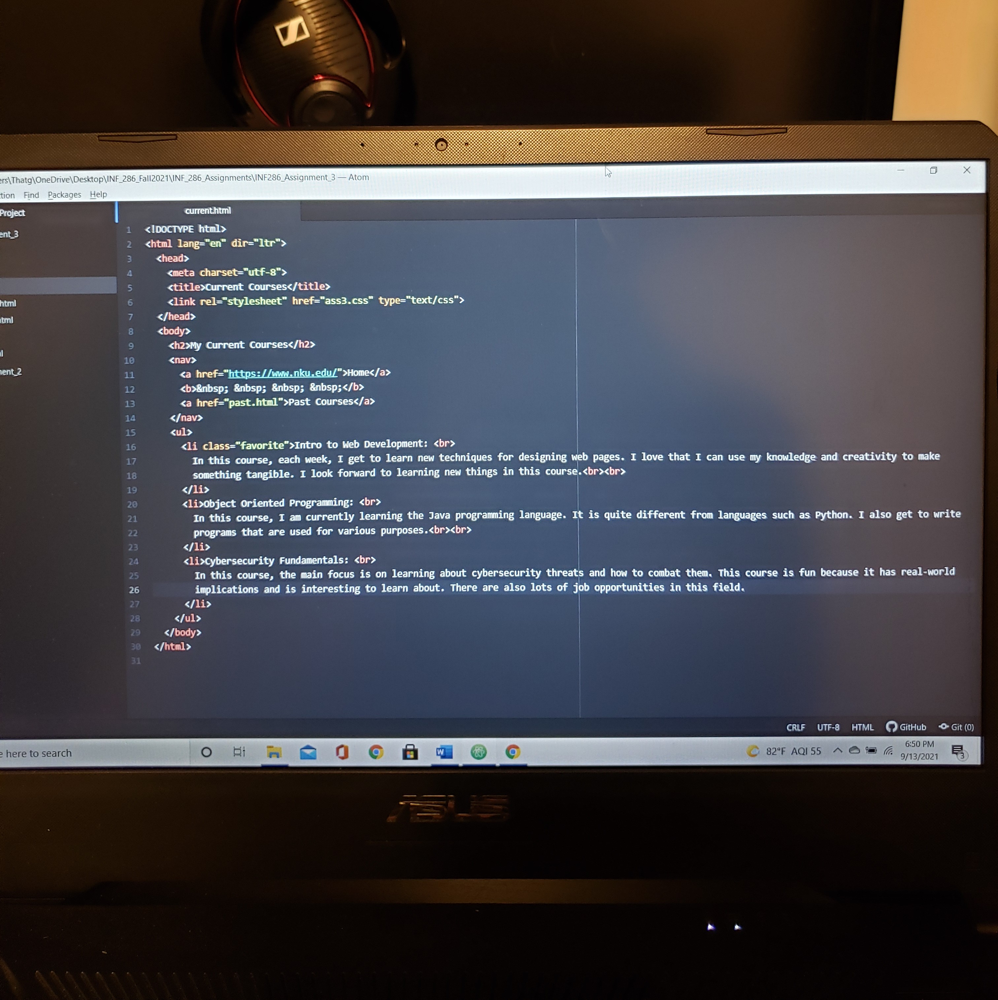

Intro
I am Brandon Cooper, a Northern Kentucky University student studying Computer Information Technology, seeking internships and working towards a career as a Database Administrator.
Bio
I am a student at Northern Kentucky University pursuing a degree in Computer Information Technology with a focus on Web and Database Administration. I have taken on the role of a TA for a database programming course, and I have a part-time job working seasonally at Florence Speedway. I believe that I have a good balance of academics and work experience which will be beneficial as I progress in my career.
I am planning to graduate in December and I am currently seeking internship opportunities to gain more hands-on experience in the field. I am also involved in NKCyber, a cybersecurity club at Northern Kentucky University, which has helped me to expand my knowledge and skills in the field. My ultimate goal is to work as a Database Administrator, utilizing my knowledge and skills to help organizations manage and secure their data.
Skills
SQL: Proficient in writing and optimizing SQL queries to extract and manipulate data from databases.
Web Server Administration: Experience in configuring and maintaining web servers, including Apache.
Database Administration: Knowledge of best practices for managing and securing databases.
Hobbies
My hobbies include hiking, playing console video games, working on desktop computers, and working on coding related projects.
 Contact Form
form here